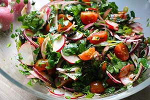

Radish Salad

Tunisian cuisine, the cuisine of Tunisia, is a blend of Mediterranean and desert dwellers' culinary traditions. Its distinctive spicy fieriness comes from the many civilizations which have ruled the land now known as Tunisia: Romans, Vandals, Byzantines, Arabs, Spanish, Turkish, Italians (Sicilians), French, and the native Punics-Berber people. Many of the cooking styles and utensils began to take shape when the ancient tribes were nomads. Nomadic people were limited in their cooking implements by what pots and pans they could carry with them. The Tunisian tagine, is very different from the Algerian or Moroccan dish. It is a type of a pie dish, made out of eggs, meat and vegetables, similar to the Italian frittata or the eggah.